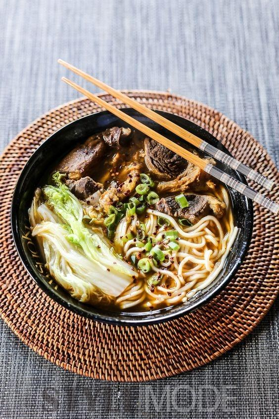

宁波汤圆
汤圆是宁波的著名小吃之一，也是我国的代表小吃之一，历史十分悠久。据传，汤圆起源于宋朝。当时各地兴起吃一种新奇食品，即用各种果饵做馅，外面用糯米粉搓成球，煮熟后，吃起来香甜可口，饶有风趣。因为这种糯米球煮在锅里又浮又沉，所以它最早叫“浮元子”，后来有的地区把“浮元子”改称元宵。与北方人不同，宁波人在春节早晨都有合家聚坐共进汤圆的传统习俗。
兰州牛肉拉面
传说兰州牛肉拉面起源于唐代，但已无法考证。目前有史料记载兰州牛肉拉面是小车牛肉老汤面演变而成的。兰州牛肉拉面经过几百年的创新发展，以肉烂汤鲜、面质精细而赢得了国内乃至世界范围内食客的好评，成为兰州的一张名片。1999年兰州牛肉拉面被国家确定为中式三大快餐试点推广品种之一，被誉为“中华第一面”。
油条
油条是我国传统的大众化食品之一，它不仅价格低廉，而且香脆可口，老少皆宜。油条的历史非常悠久。我国古代的油条叫做“寒具”。唐朝诗人刘禹锡在一首关于寒具的诗中，是这样描写油条的形状和制作过程的：“纤手搓来玉数寻，碧油煎出嫩黄深；夜来春睡无轻重，压匾佳人缠臂金”。这首诗把油条描绘得何等形象化啊！油条是北京最常见的小吃，一般作早点食用。
西安糊辣汤
糊辣汤，陕西人民最经典的小吃之一，可以说凝聚了陕西小吃的精华。几乎在西安，只要有人居住的地方就会有糊辣汤。早上穿行在背街小巷，随处可以闻到一口口大锅散发出肉汤的香味，听到卖糊辣汤的师傅用很有特色的坊上陕西话喊着；糊辣汤、热馍等等，看着木勺拉起的汤的线条。熬糊辣汤是西安回民的绝活，似乎没有外传，几乎卖糊辣汤的店都会有清真的牌子，而往往一些回民的泡馍馆早上也会客串卖糊辣汤。
糯米团
糯米团是老上海人的传统早餐，在宁波和上海的一些地摊上，均可以见到这些特色的传统早餐。糯米擀成薄薄的一张面饼，在上面放点榨菜，夹一根油条，卷成一个团子，就这样，纯正的上海糯米团就完成了。